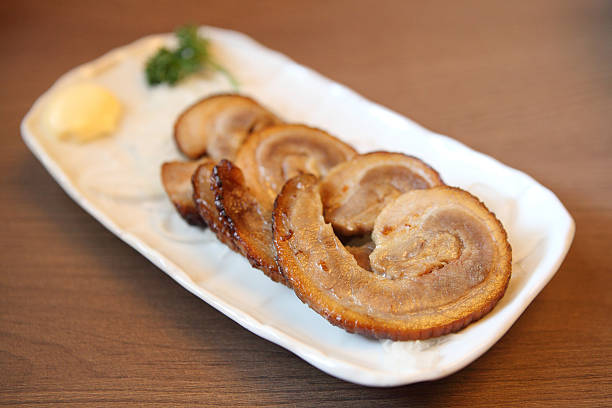

Simmered pork

Chasu-style pork
This pork simmered in broth can be used as a topping for any noodle dish, with rice or in a lunch box. It's one of the most popular ingredients in asian food.
Ingredients
- 1 leek
- 72 g raw sugar
- 600 g pork, marbled
- 1,5 tablespoons of oyster sauce
- 4 boiled eggs (you can use both hard and soft boiled)
- Small piece of ginger (add to your liking)
- 200 ml sake
- 210 ml soy sauce
- 1 L water
Steps
- Cut the vegetables and tge pork in 2-3 pieces and put in a pan. The pan must be able to hold the pork in one layer.
- Put the rest of ingredients in the pan, but leave the eggs out.
- Once boiling, put on the small heat.
- Let it simmer with the lid on for about 30 minutes.
- Take the lid off and let it cook for about 25-35 minutes.
- Take the pork out and let the broth cook until it has consistency of sauce.
- Put the meat and eggs back in the pan and cover with the sauce.
- Take it off the stove and let it rest for a bit.
And you are done! Slice it into fewer pieces if you want to use it as topping.
Back to the main page